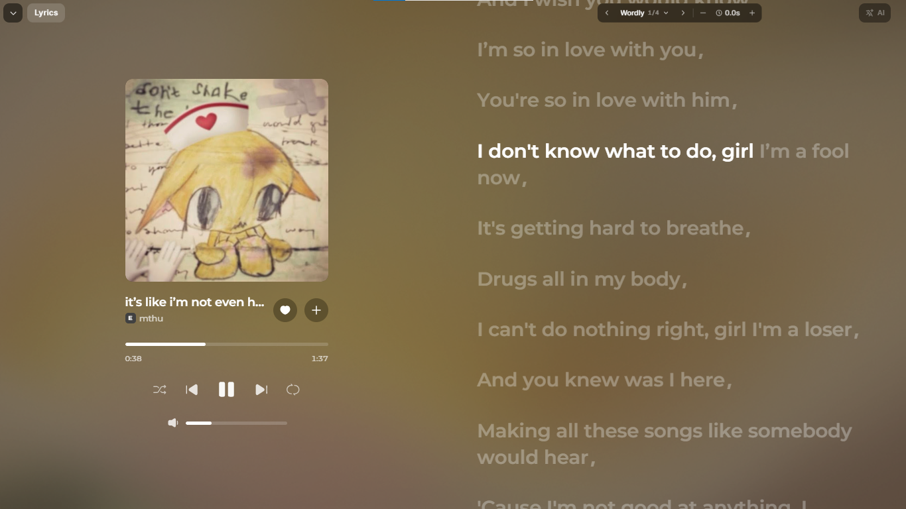
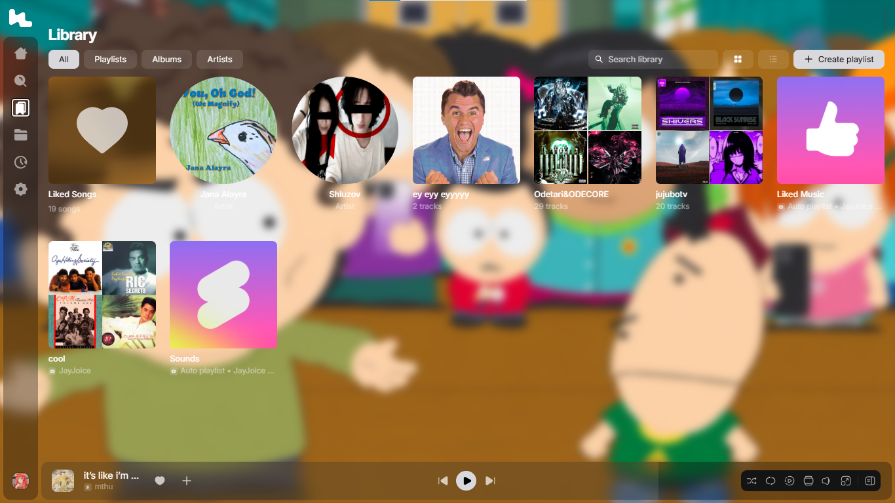
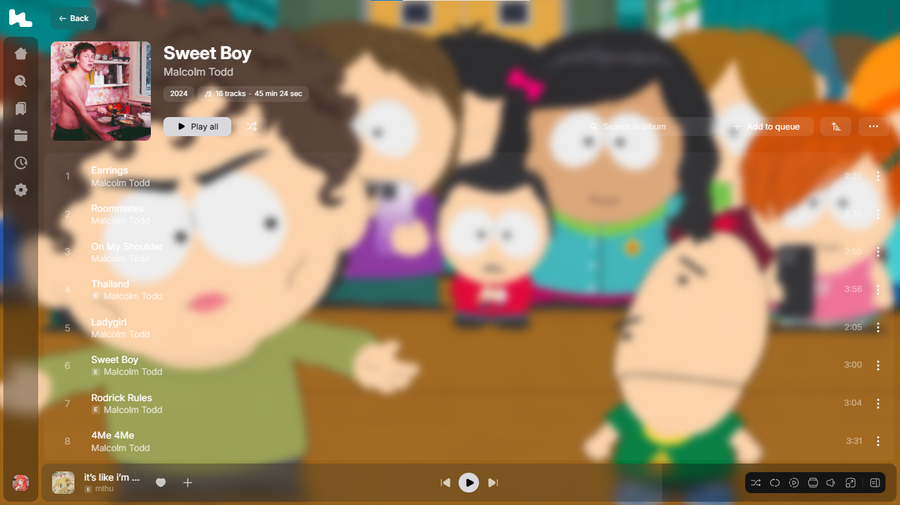

Liner, in your browser.
The website port of Liner — the modern music streaming player with syllable-synced lyrics, AI translation and reactive dynamic visuals. No install, no Electron: just open a tab and press play.
An unofficial, community-made port of the Liner desktop app. Not affiliated with or endorsed by the Liner team.
Screenshots
Syllable-synced lyrics, live visuals.
The fullscreen player keeps the word-level karaoke highlight, AI translation and the reactive WebGL background from the desktop app — straight in the browser.



Features
The desktop app, minus the desktop.
Everything that makes Liner feel like Liner, re-built for the web. The Electron shell is gone — a Next.js host serves the player and relays what a browser can't do alone.
Full streaming player
Search, albums, artists, playlists, mixes, queue and library — the same experience as the desktop app.
Syllable-synced lyrics
Word-level karaoke highlighting with AI translation and a fullscreen view over a reactive WebGL background.
Mini player & overlay
A compact always-visible player bar with full transport controls, dockable mini player and desktop overlay.
Discord Rich Presence
Broadcasts what you're listening to straight from the browser — cover art, artist badge and a live progress bar.
Equalizer, speed & pitch
The desktop audio engines, running on the Web Audio API — presets, per-band EQ, playback rate and pitch.
Local-first storage
Likes, playlists, play history and cached covers live in your browser's IndexedDB — on your device, not ours.
12 languages
The same translation set as the desktop app, with AI lyrics translation on top.
Keyboard shortcuts
The full desktop shortcut set — play, seek, volume, lyrics, mini player — browser-native.
Changelog
What's new.
The port ships updates continuously — the same changelog the app shows in its sidebar.
One player, not two — lyrics behave again
- fixedThe fullscreen player was silently mounted twice whenever it was opened as a page, stacking two identical lyric panes — the "I turned lyrics off and they just won't be gone" bug. The player now exists exactly once, so the Lyrics pill always controls what you actually see.
- fixedThe duplicate also raced the translation engine; with a single player, the translation you trigger is the translation that appears.
- fixedTranslation errors now show next to the AI button in red instead of hiding behind a tooltip, and clicking the AI button retries immediately.
- fixedGoogle Translate gained a new last-resort fallback: if both free Google endpoints are unreachable, translations fall through to the built-in Liner AI translator instead of failing.
Earlier releases — v1.9.1 "AI Translate polish" and v1.9 "AI Translate that actually translates" — are in the full changelog on GitHub.
Get started
Three ways in.
Use the hosted port, run your own, or dig through the source — it's all open.
Use the live port
Open the hosted instance, sign in and start listening. Works in any modern browser — Chrome, Edge, Firefox, Safari.
liner-music.space-z.ai
Self-host it
Node.js 22+ and any modern browser. The Next.js shell serves the API relays on :3000, Vite hot-reloads the player on :5173.
git clone https://github.com/goodbyeworld42-ai/Liner-Website-Port
npm install && npm run dev
Read the docs
Architecture, where the desktop layer went, storage internals, testing and contribution guide — all in the README.
github.com/goodbyeworld42-ai/Liner-Website-Port